Raising baby poultry is easy and a great deal of fun. Many people start with chickens, but you might also consider ducks, guineas, turkeys or geese. You can order chicks from a hatchery, buy them at a local farm store, or allow a hen to hatch eggs and raise the chicks for you. Raising purchased chicks is easy, but remember that they rely on you for their every need.
Just before hatching, a chick absorbs and stores the last of the egg yolk it’s been feeding on throughout incubation. This last bit of yolk can sustain the chick for several days before its first drink or meal, providing a window of opportunity for shipping chicks from a hatchery to your front door.
When your chicks arrive, open the box in the presence of the postal clerk or carrier. Shipments from a reputable hatchery are insured, and the hatchery will likely replace losses if there are a large number of fatalities. That sounds scary, but I’ve rarely had problems. It is not unusual, however, to have a couple of losses (either in transit or within the first day or two) of weaker chicks that just didn’t have a good start. Even in the best of circumstances, transit through the postal system is stressful for chicks. Provide them with warmth, water and feed immediately.
A brooder is a warm, draft-free environment to replace a mother hen’s body heat. You can buy a commercial brooder, but it is cheap and easy to assemble one from materials on hand (a large cardboard box will work for a few chicks).
The brooder must have a heat source. Any lamp with 100- to 250-watt bulbs will work for about a dozen chicks. Or you can buy a special brooder heat lamp or use small electric heating elements. For temperature control, lamps can be raised or lowered. The closer the lamp is to the floor, the warmer the air at the chicks’ level. Secure the lamp or heater so it’s not too close to combustible surfaces (litter, cardboard or wood sides) - usually 18 inches or so, as recommended by the manufacturer.
Another option is a “hover,” a boxlike structure of metal or plywood, suspended a few inches above the brooder floor and containing a heat source. The chicks retreat under the hover to warm up, or range for feed, water and exercise in the cooler area outside.
The standard recommendation is that brooder temperature be maintained at 95 degrees Fahrenheit for the first week and reduced by 5 degrees each week until the chicks’ bodies are completely covered with feathers. Just observe the behavior of the chicks: If they huddle up under the heat, the brooder is too chilly. If they retreat to the perimeters of the brooder, the heat source is too intense. If they are scooting about like water bugs, the temperature is “just right.” Of course, like all babies, they need to sleep a lot, so don’t worry if you see individuals immobile on the litter.
The brooder must prevent direct drafts (which would chill the chicks) but allow fresh air to circulate through.
Cover the bottom of the brooder with loose, absorbent material such as straw, wood shavings (kiln-dried, not “green”), or shredded cardboard or paper. A slick surface such as sheets of newspaper or cardboard can cause leg problems, especially in ducklings and goslings.
Be sure the area in which you set up the brooder - basement, garage, barn or other outbuilding - is secure against pets, rodents, snakes and other predators, any of which could devastate your helpless brood.
Remember, you’re the mama. The first thing to teach your babies is how to drink. As you take each chick out of the shipping box, dip its beak into the water. Then release it onto the floor of the brooder. Do not use open waterers in the brooder. Chicks splashing in water may chill and die. Use a waterer with a restricted “lip” so the chicks can drink but not wade.
Commercial chicken feeds are usually sold in three formulations: a high-protein, medicated chick “starter;” a medium-protein “grower ration” or “pullet developer;” and a lower-protein, higher-mineral “layer mash” for adult hens. In a well-managed home brooder, additions to the diet such as antibiotics, growth stimulants or hormones are completely superfluous. To avoid the additives, start the chicks on the grower ration, or equivalent, and boost the protein with fish meal; chopped hardboiled eggs; milk; ground, raw beef liver; earthworms; Japanese beetles or other insects. (You must never feed layer mash to growing chicks - the extra mineral content can hinder proper development of their reproductive systems.)
I prefer kiln-dried pine shavings as floor litter. I cover the shavings with empty burlap coffee bean sacks the first couple of days, because the chicks haven’t learned to discriminate about what to eat, and they might eat the shavings. I scatter some feed initially over the sacking so the chicks learn about feeding. Then I take up the sacking and offer feed in the feeder only. Use a special chick feeder designed to minimize spillage of feed. A hanging feeder is best; raise it to keep the feeding level at about shoulder height of the rapidly growing chicks.
In addition to feed, you should offer your brood free-choice “grit,’’ small bits of rock they ingest to grind their feed in their gizzards. You can buy commercial granite grit (which comes in sizes appropriate to different ages and species of fowl), or you may find chick-size grit, about the size of radish seeds, around your homestead.
The key to success is frequent monitoring of the brooder, plus common sense. The biggest obstacle to success is stress, such as overcrowding, temperature extremes and running out of feed or water. Keep your nose tuned for the slightest hint of ammonia coming out of the litter, and add fresh material as needed.
Cleanliness or sterility? Good sanitation in the brooder is essential to prevent disease and distress. But it is a mistake to assume that absolute sterility is either possible or desirable. You should prevent the “caking” of manure in the brooder, caused by overcrowding or inappropriate litter materials (any that are not absorbent and do not fluff up easily). When brooding successive batches, I favor topping off the old litter with fresh material (in lieu of removing it entirely and sterilizing the brooder). The litter becomes biologically active as decomposition proceeds (as in a working compost heap), yielding microbial metabolites that actually strengthen the immune systems of the growing chicks. An earth floor works best for this system.
Prevent cannibalism. Sometimes chicks start pecking at each other. Some people use an infrared lamp (instead of white light) to prevent the “cannibalism.”
Assuming the birds’ basic needs are met - proper temperature and ventilation, easy access to waterers and feeders, and sufficient protein in their feed - the only inducement to cannibalism would be overcrowding or boredom. Give them plenty of room to run around, and litter they can scratch and have fun in, and you are unlikely to have a problem with cannibalism.
The most extreme prevention of cannibalism is debeaking, which means exactly what the name implies: cutting off half of the upper beak of the just-hatched chicks. Recognize debeaking for what it is: mutilation.
Avoid “pasting up.” Chicks’ droppings sometimes get sticky and cling to the down around the vent (anus). As droppings dry, they can block the opening of the vent - in extreme cases causing the chick to die, simply because it cannot poop. Monitor for pasting up, especially the first couple of weeks. To treat, hold the chick in one hand and gently pull off the caked feces.
Being chronically chilled can bring on pasty butt, so make sure the brooder is warm enough. But I think the condition is most often related to the mediocre quality of many commercial poultry feeds. If purchased feeds are your only option, introduce small quantities of natural feeds from day one: fresh grass clippings or lettuce from the garden, for example. Remove any not eaten within a few hours, to prevent mold.
Vaccination and “medications.” Many sources advise having chicks vaccinated and using medicated feeds to provide subtherapeutic doses of antibiotics. In several decades of experience I have strictly avoided both, and have not had a single case of Marek’s disease (a viral disease that causes paralysis and can be vaccinated against) or losses to coccidiosis (a protozoal infection that causes diarrhea and is treated with the antibiotics in medicated feeds).
(For a complete guide to classic information on starting chicks, read the book Success with Baby Chicks by Robert Plamondon.)
Now I’m going to give you the best advice of all: Instead of mail-order chicks, let a good mother hen do the job of hatching the eggs and brooding the chicks for you. The “broody” instinct - the inclination to assemble and hatch a clutch of eggs, and to nurture and protect chicks - has been almost universally bred out of modern breeds. The occasional hen will “go broody,” but most do not. Some traditional dual-purpose farm breeds (cochins, buff Orpingtons, Wyandottes) are known for broody tendencies, though you cannot be sure any given group will produce good mothers. If you want to work with natural mothers, get a few hens of the historic breeds (old English games, kraienkoppes, malays, shamos, asils or silkies), among which the broody instinct is the norm, not the exception. Many bantam (miniature) breeds also are much more inclined to go broody.
You can identify a broody hen by her Zen-like gaze and deep, wary settling into the nest. She answers an extended hand with ruffled hackle feathers and an indignant “Sqwarrrk!” At night, she remains on the nest after her sisters have gone to roost.
If your flock doesn’t have an adult male (a cock, frequently called a “rooster”), the eggs your hens are laying won’t hatch. If you want to collect eggs to hatch from your own chickens, you should have one cock for about every 12 to 15 hens.
The eggs you are going to set under your broody hen do not have to be collected all on the same day. You can include eggs gathered over many days (up to a limit of about 10 days or so), because the fertilized germ cells remain dormant until the hen begins to set on the eggs and the temperature of the eggs is raised to a constant incubation temperature. You must not make additions to the clutch (or allow other hens to do so) after embryo development has begun, because the eggs would then not be on the same schedule for hatch.
But broody hens are great surrogate mothers and will hatch just about any eggs that fit under them. Many hatcheries sell hatching eggs and ship them through the mail. You also can buy hatching eggs at online auctions.
Don’t even think about letting the hen incubate eggs in a coop where other birds can get to her nest. Move the broody hen (only at night) to a nest in a quiet corner, with some sort of physical barrier to exclude other hens. Provide feed, water and enough space for her to leave the nest to stretch and relieve herself.
After you notice a hen has “gone broody,” set her on plastic or wooden eggs initially. If she is agitated at first, give her time to settle on the fake eggs, usually by the end of the first day. Then (again working only at night), remove the fake eggs and substitute the fertile eggs you have collected from your best hens or purchased from good stock.
Chicken broodies usually tolerate a move to a different nest. Females of other domestic fowl (ducks, geese, guineas and turkeys) cannot be moved after onset of broodiness without “breaking them up” (disrupting the broody mind-set). Plan ahead for such hatches, and let the broody female continue with her work where she has chosen to “set,” simply adding some sort of partition to prevent disturbance.
The number of eggs to set depends on the size of the hen. The hen should completely cover the clutch, because it is her body heat that supports the growth of the embryos.
Monitor unobtrusively every day, making sure the hen has feed and water. Do not be concerned about feed intake; some hens eat little while brooding. Hens may like to leave the nest for a brief outing.
The literature will tell you incubation is 21 days for chicken eggs (up to 36 days for other species). But mark a “be ready” date of 20 days on your calendar. I have found that, under natural mothers, eggs are as likely to hatch in 20 days as in 21.
Hatch-out of the entire clutch takes place over about 16 hours. In practice, this usually means you can leave unhatched eggs under the hen overnight for a final chance to hatch. Beyond that point, they are unlikely to do so.
This is the point at which you realize what a smart move you’ve made, giving the task of starting new chicks to the real expert, a mama chicken. My preference is to move the hen with her clutch directly to the pasture. The hard-working hen forages the best possible natural foods for her babies.
If you return the mother hen and her brood to the main flock, give them a compromise feed that all the chickens can safely eat - not layer mash. You can supplement the laying hens’ extra mineral needs with crushed oyster shell, which the little ones will ignore for now. To provide for the higher protein needs of the chicks, feed protein-dense feeds inside a small “creep feeder” shelter - one allowing access to the growing chicks while excluding the larger adults. You don’t need to worry about the safety of the vulnerable chicks with the older, sometimes contentious, adult members of the flock - they all know mama will properly kick butt if any are foolish enough to mess with her babies.
I strongly recommend that you not add the latest “superhybrids” to your backyard flock simply because that is what is available at the local farm cooperative. Choose one of the fascinating older breeds, many of which will exhibit better foraging skills and greater immunity to disease. This also will help with the task of preservation of traditional and historic breeds. Some are in danger of being lost forever. You can learn more about traditional and rare poultry breeds, and get in touch with preservation breeders, via these two organizations:
Society for the Preservation of Poultry Antiquities, Charles Everett, SPPA Secretary-Treasurer; 1057 Nick Watts Rd.; Lugoff, SC 29078. SPPA does not have a Web site, but you can find information about the society by clicking the link above.
American Livestock Breeds Conservancy; P.O. Box 477; Pittsboro, NC 27312; 919-542-5704; ALBC maintains a list of breeds in need of preservation and a list of members who are breeders.
If you’d like to order chicks or poultry supplies, check out these companies:
Brinsea Products Inc.
Cackle Hatchery
Hoffman Hatchery, Inc.
Hoover Hatchery Inc.
King’s Supply
Metzer Farms
Meyer Hatchery
Murray McMurray Hatchery
Myers Poultry Farm; 814-539-7026
Oakwood Game Farm
Randall Burkey Company
Ridgway Hatchery
Stromberg’s
Welp Hatchery
|
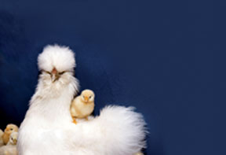 ISTOCKPHOTO/IRINA IGUMNOVA This breed of chicken, a silkie, is known to have a strong instinct to hatch eggs. |
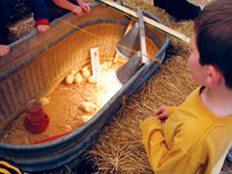 ISTOCKPHOTO/CRAIG VELTRI A metal stock tank provides a sturdy, draft-free environment for chicks. |
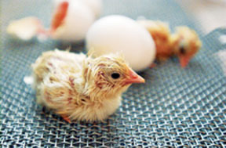 LE MEDIA/FOTOLIA Newly hatched chicks can survive up to three days without food or water. |
|
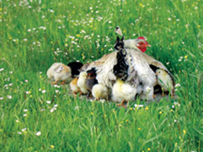 ISTOCKPHOTO/OANA VINATORU Letting mother hens do the work will make raising chicks easy. |
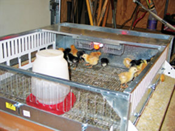 HARVEY USSERY Commercial brooders usually include a device to regulate temperature automatically. |
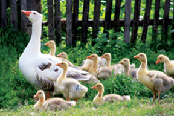 ISTOCKPHOTO/MARK KARRAS Moving a brood (in this case, geese) to pasture will give them a healthy start. |
|
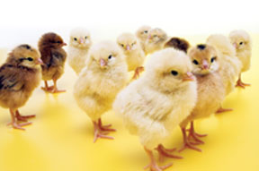 TOMASZ WOJINAROWICZ/FOTOLIA Whether you buy chicks from a hatchery or buy eggs for your hens to hatch, you can find a breed that suits your needs. |
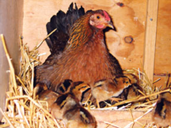 HARVEY USSERY Hens that are incubating eggs must be isolated from the rest of the flock, but can return shortly after the chicks hatch. |
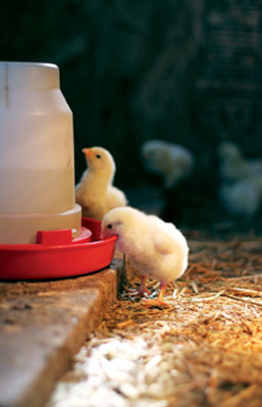 ISTOCKPHOTO/KARY NIEUWENHUIS Always use a small poultry waterer to prevent the chicks from getting wet. |
|
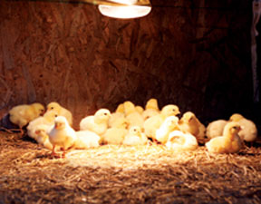 ISTOCKPHOTO/KARY NIEUWENHUIS Observe chicks’ behavior to see if they’re too warm or cold. These chicks are comfortable. |
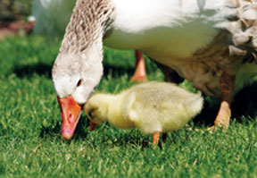 ISTOCKPHOTO/SUEMACK Expect a warning peck (or hiss from a goose) if you get too close to a mother bird with babies! |
|